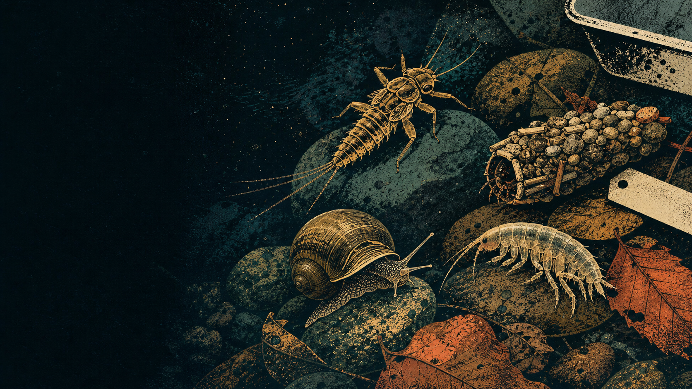

NEON My Little Inverts · unofficial
What livesbelow the surface?
Explore the aquatic invertebrates NEON recorded in stream, river, and lake-bottom samples.

NEON My Little Inverts · unofficial
Explore the aquatic invertebrates NEON recorded in stream, river, and lake-bottom samples.
